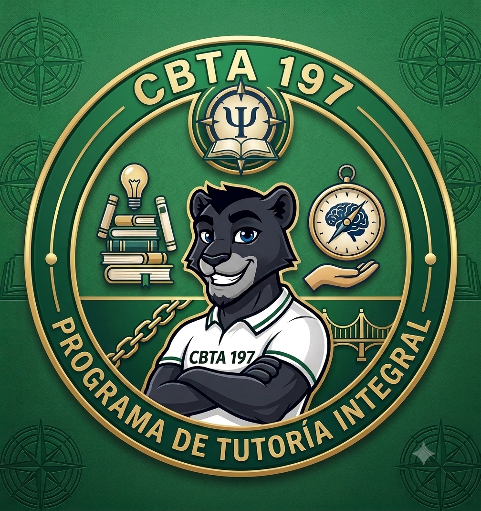

JovenesConscientes

inicio
Informacion
Participacion
Contactanos
Participacion
¿Por que queremos que participes?
Queremos que TU participes para romper la normalizacion del desvelo y el aislamiento. En el mundo estudiantil, presumir que "no se durmio por estudiar" se considera un logro; al hacer que participen, descubren colectivamente que el insomnio no es una medalla, sino un problema compartido que afecta TU rendimiento, TU memoria y TU salud mental.
¿En que consiste participar?
Consiste en formar parte activa de un intercambio de experiencias y soluciones en el aula. No es sentarse a escuchar una clase sobre higiene del sueño, sino que consiste en que el alumno trabaje en equipo para confesar sus habitos de forma anonima, clasificar los problemas del grupo en el pizarron y proponer soluciones realistas para los retos de descanso que sufren sus propios compañeros.
¿Qué implica participar?
Para el CBTano, participar implica tres compromisos clave:
Honestidad: Dejar la vergüenza de lado para admitir sus verdaderas rutinas nocturnas (pantallas, cafe, procrastinacion).
Empatia: Escuchar las dificultades de los demas sin juzgar y pensar criticamente en soluciones que realmente les sirvan.
Co-responsabilidad: Comprometerse activamente a cumplir y respetar el "pacto de descanso" acordado por todo el grupo.
Como participar
Primero, haz click en el apartado "Contacto" al extremo derecho de el encabezado.
Despues, llena el formulario con tus datos. Al llegar a "Motivo del contacto", clickea el la opcion que dice "Peticion para unirse"
Ya por ultimo, escribenos un pqeueño mensaje de tu preferencia, y da click al boton de enviar.